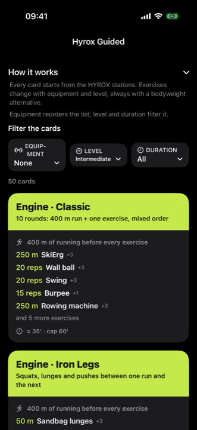
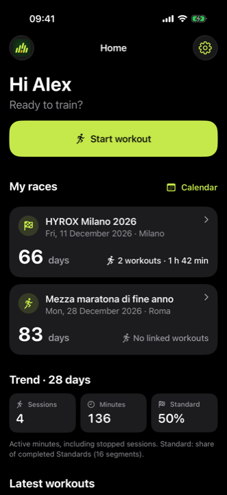
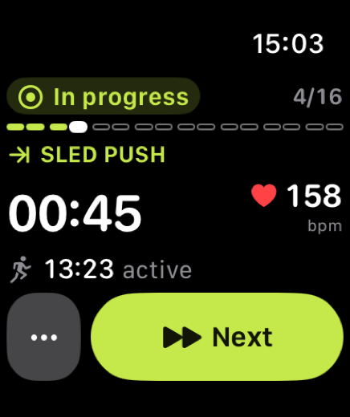
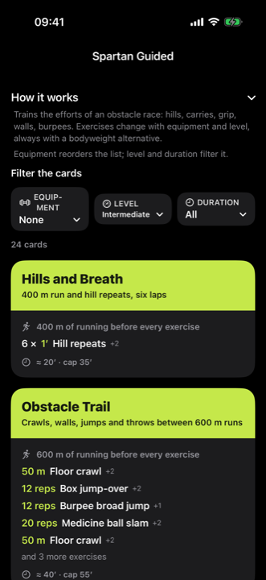
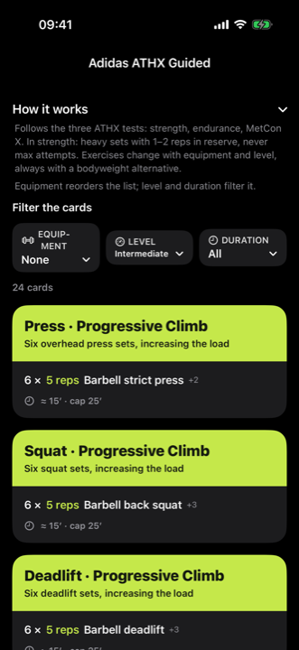
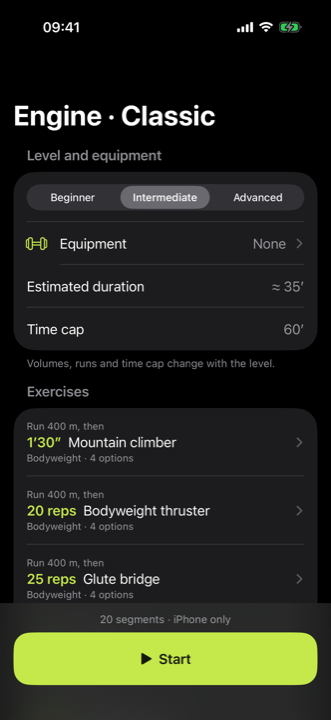
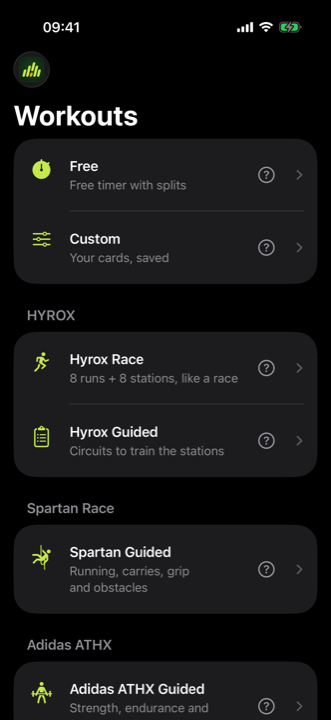
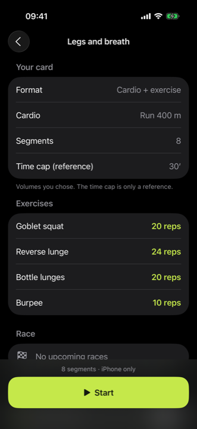
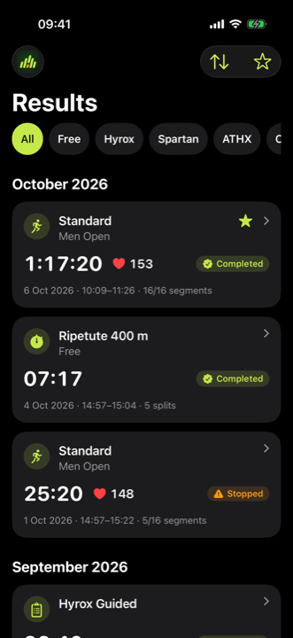

Free
A free timer with splits. A segment stopwatch, manual or automatic, with sound cues.
Manual or automaticFree, Custom, Hyrox, Spartan and Adidas ATHX: guided cards, a segment timer and Apple Watch. Free, no account, and it works offline.



Pick how you train today. Same app, same summaries, one history.
A free timer with splits. A segment stopwatch, manual or automatic, with sound cues.
Manual or automaticBuild your own cards, with or without a run in between, up to 40 exercises. Add your own exercises too.
Saved on your iPhoneRace: 8 runs + 8 stations, as in the race. Guided: 50 circuits to train the stations.
Race and Guided24 circuits of running, carries, grip and obstacles.
Spartan Guided24 circuits of strength, endurance and MetCon X.
Adidas ATHX GuidedEvery card starts from the stations of the discipline. You choose equipment, level and duration: the exercises adapt.





Build a circuit from the exercise library and your own exercises, save it and use it whenever you want.
Optional: the iPhone is enough for everything. With Apple Watch you move to the next segment, pause and see your heart rate without reaching for the phone.

Filter by Free, Hyrox, Spartan, ATHX or Custom. Every segment time, heart rate, favorites and the countdown to your races.
No sign-up and no login: open the app and train.
Workouts and cards stay on your iPhone.
Train anywhere, even without a connection.
Yes. No subscription, no in-app purchases and no account.
No. The iPhone is enough for everything; the Watch is optional.
Yes. Workouts, cards and history work offline.
iPhone with iOS 17 or later. The Apple Watch app needs watchOS 10.
Race follows the standard course: 8 runs and 8 stations, with distances and weights per division. Guided offers circuits to train the stations, even at home.
On your device. If you want, you can export a workout to Health: it is your choice.
Italian and English. You choose on first launch.
Yes: suggestions for equipment and accessories for each discipline, with links to Amazon.it. No purchases inside the app.
No. Ardenza is an independent app. HYROX, Spartan Race and adidas ATHX are trademarks of their respective owners, used here only to name the formats you can train.
Download Ardenza, pick your language, answer four questions and start.